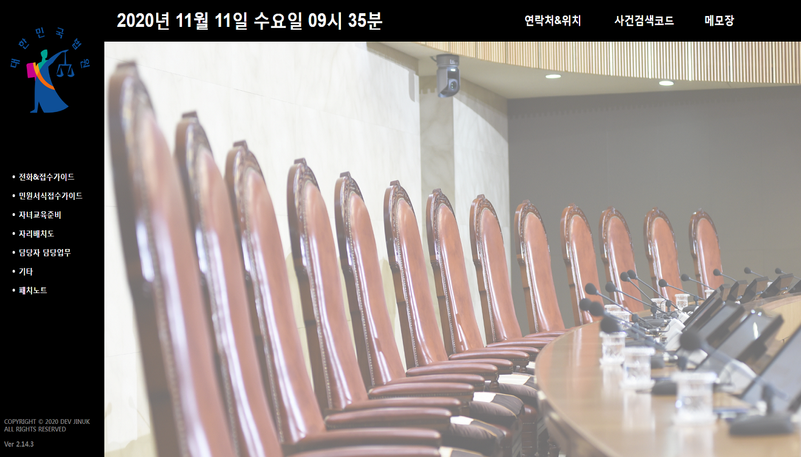
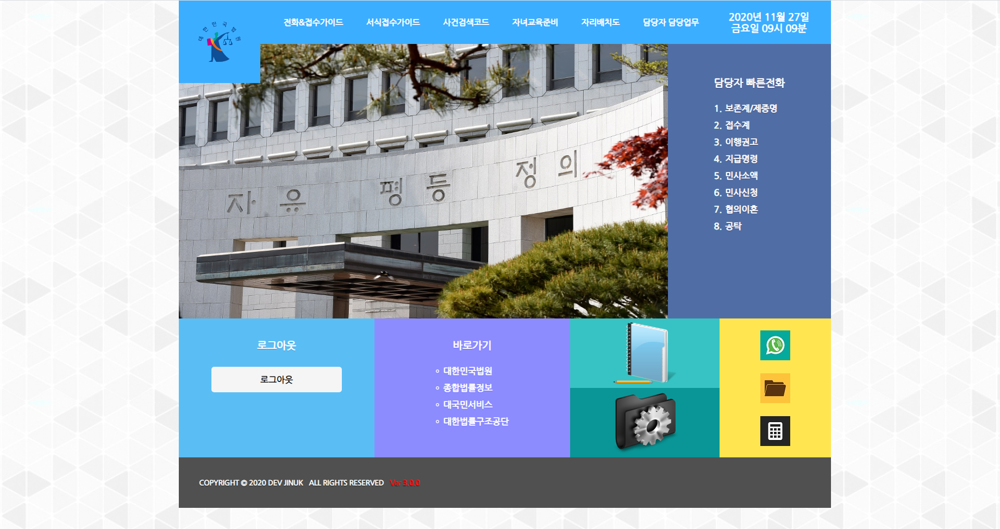

00:00

파주시법원 Ver1.0.0
Ver 1.0.0 2020/05/25 기본구상 및 디자인, 디자인 및 메뉴 개편, 배너제작, 저작권표기
Ver 1.1.0 2020/05/26 각 메뉴별 내용추가
Ver 1.1.2 2020/06/07 담당자 담당업무표 수정, 메모장삭제 ,검색창 삭제, 전화접수가이드내용 추가, 기타내용추가
Ver 1.1.3 2020/06/08 추가접수가이드 메뉴 추가
Ver 1.2.0 2020/07/03 추가접수가이드 개편, 일부내용추가
Ver 1.2.1 2020/07/06 전화&접수가이드 가압류일부 변경
Ver 1.4.0 2020/07/08 index.html 추가 및 수정

파주시법원 Ver2.0.0
Ver 2.0.0 2020/07/09 웹사이트 전체 디자인 개편
Ver 2.1.0 2020/07/29 전화&접수가이드 개편, 기타에 히든 링크추가
Ver 2.2.0 2020/07/31 서식접수가이드 개편, 기타에 히든 링크삭제 후 서식접수가이드에 추가
Ver 2.3.1 2020/08/10 기타 → 기타가이드로 수정, 기타가이드 인터페이스 변경 및 추가
Ver 2.3.2 2020/08/25 서식접수가이드와 사건검색코드 일부 수정, 경로지정변경
Ver 2.4.0 2020/08/26 서식접수가이드 UI수정
Ver 2.5.0 2020/08/27 계산기기능추가/서식접수가이드 내용추가
Ver 2.6.0 2020/09/02 담당자 담당업무개편 + 수정필요
Ver 2.10.0 2020/09/05 Ver 2.0.0 ~ Ver 2.6.0의 고질적인 문제해결, 경로재지정, 리메이크
Ver 2.10.1 2020/09/07 폰트수정
Ver 2.10.2 2020/09/15 work.html 이벤트리스너 추가
Ver 2.10.3 2020/09/23 edu.html 일부수정
Ver 2.10.4 2020/09/28 seat.html 최신화
Ver 2.10.5 2020/10/08 coo1.html(협의이혼접수)최신화
Ver 2.11.1 2020/10/22 work.html(담당자 담담업무)UI변경, memo.html 일부변경
Ver 2.12.0 2020/10/27 code.html(사건검색코드)UI변경, code.html 일부변경
Ver 2.12.2 2020/10/29 code.html 일부수정, index.html 메모기능 추가
Ver 2.14.3 2020/10/30 index.html 상단 편의바 추가(시계 추가), contact.html 추가, 경로추가 및 삭제

파주시법원 Ver3.0.0
Ver 3.0.0 2020/11/26 Ver2 법원 웹사이트 전체 개편, 디자인 및 기능등 편의기능추가
Ver 3.0.1 2020/11/28 전체적인 웹사이트(반응형) 점검 및 전화접수가이드 추가
Ver 3.1.0 2020/11/29 서식접수가이드의 버그, 오류 수정 및 전체적인 개편
Ver 3.2.0 2020/12/03 로그인(login.html)기능 삭제, 서식함 서식번호 조회기능 추가
Ver 3.2.1 2020/12/04 바로가기 일부변경 및 추가, 서식함 서식번호 placeholder 투명도 추가
Ver 3.2.2 2020/12/08 basic.html 사건명 가이드 추가
Ver 3.2.3 2020/12/15 guide/line/li31.html [임차권등기명령] 체크박스적용
Ver 3.2.5 2020/12/17 [서식접수가이드]에 민사소액서식에 반소장 추가 lii11.html, 기타서식에 법률지식추가 lii10.html
Ver 3.3.0 2020/12/18 code.html(사건검색코드) 전체 개편화[+검색기능추가]
Ver 3.3.1 2020/12/21 양식모음 양식날짜변경, 인사발령으로 인한 담당자 인적사항 교체
Ver 3.4.1 2020/12/29 calc.html(계산기)삭제, todo.html(할일리스트)추가, 일부CSS삭제
Ver 3.4.3 2021/01/11 basic.html일부수정 및 위로가기 버튼제작, 기타양식에 편의라벨 추가, 내용 일부수정 및 추가
Ver 3.4.5 2021/01/13 index.html하단 저작권정보 모달창으로 변경, patch.html(패치노트) 위로가기 버튼 생성
Ver 3.5.0 2021/01/14 call.html(위치 및 연락처)개편, call.css를 수정
Ver 3.5.1 2021/01/19 웹 일부점검 및 수정
Ver 3.5.2 2021/01/20 모든html의 title을 알맞게 변경하였습니다.
Ver 3.6.0 2021/01/23 work.html(담당자 담당업무)개편, 모달창 일부수정
Ver 3.6.1 2021/01/28 work.html(담당자 담당업무) 위로가기 버튼제작, 웹사이트 내용일부수정
Ver 3.6.2 2021/02/04 웹사이트 내용일부수정
Ver 3.6.3 2021/02/05 자리배치도 사진수정, 양식모음&index.html에 임차권등기명령안내문추가
Ver 3.8.0 2021/02/17 편의기능 추가(확장)[인지&송달료 계산, 오늘할일, 법률지식, 사회복무요원가이드]
Ver 3.8.2 2021/02/26 basic.html, code.html, enter.html 수정 및 추가, index.html 서식함 서식번호 양육협의서 추가, song.html, song.css 인지부분삭제